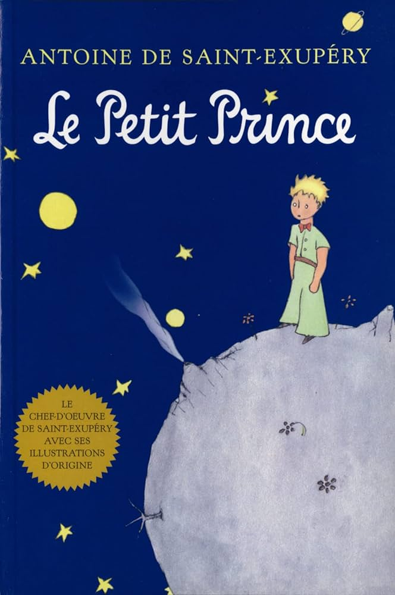
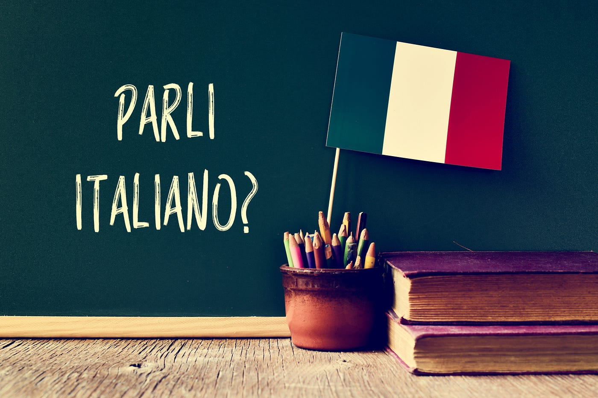

My favorite things are Science, learn new languages, Meet foods, drawing, read books.
I like dogs and cat. I like all animals, rather than people.
My favorite Anime

This is a great Anime, because Every detail in this anime is thought out. A very big and interesting story in which you will not get bored. Every episode is exciting. Even though this anime is big , the story between the arcs is connected.
My Favorite Book
This book is amazing, because tihs book is like a part of life. This book contains many meanings from life.
My favorite language
This language sounds very nice in pronounciation and shows more respect in conversation.